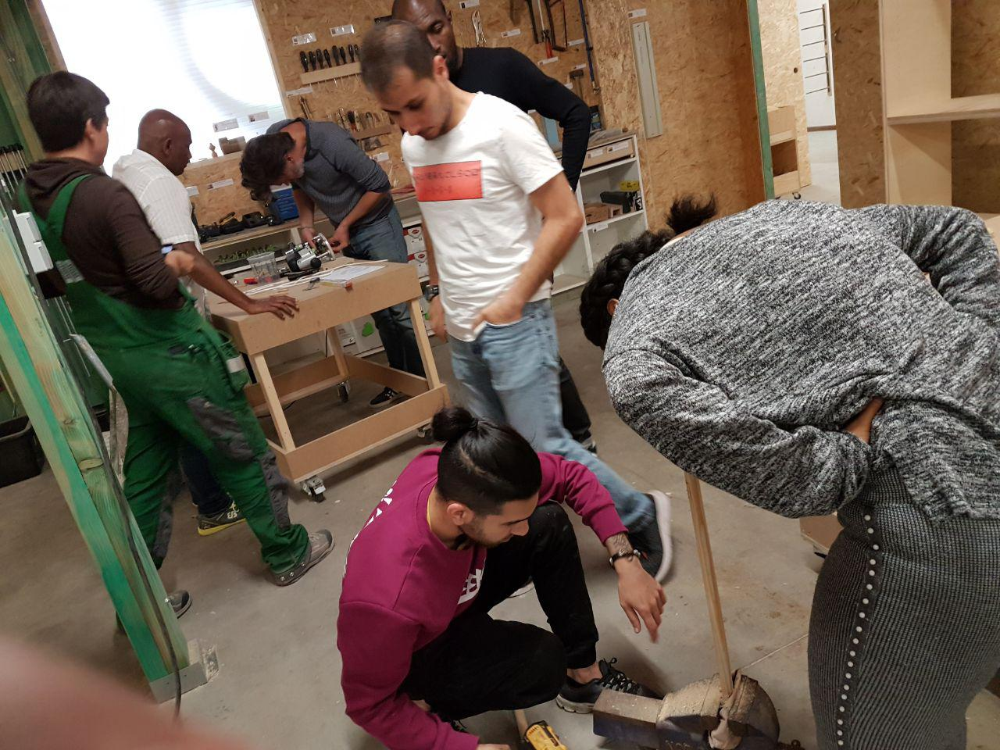
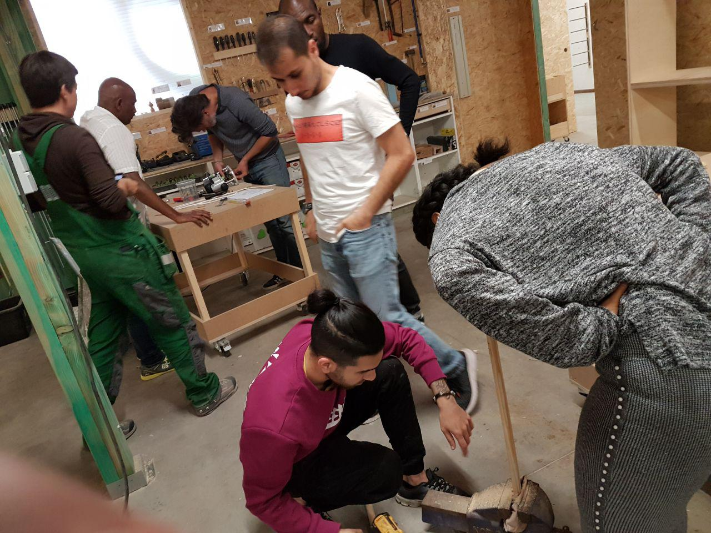
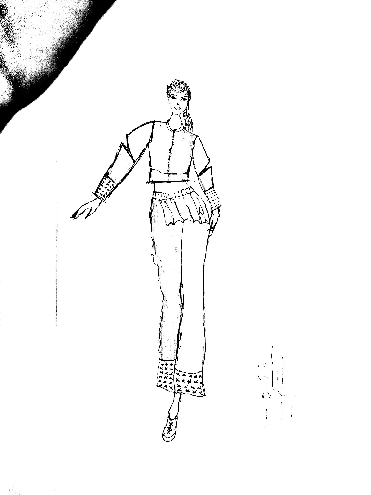
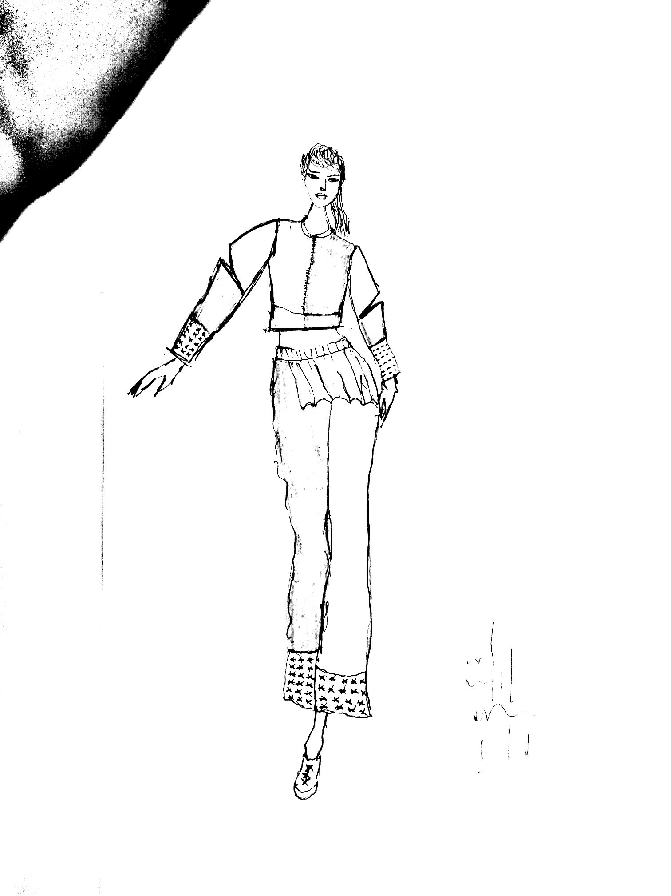

from idea development to graphic design
Let's start with end of the world , why don't we?facilitator: Femke Snelting in collaboration with Elli Vassalou
Designing together a book cover, from selected afrofeminist science-fiction novels. Instead of laying these out on the computers, the group makes them as tableau vivants. The spatial set-up or scenography is photographed at the end of the day. In this way they can use lighting,objects, different materials, typography, projections and alternative ways to develop these graphics.
.jpg)
.jpg)

libre objects
facilitator: Wendy Van Wynsberghe
MONDAY 23/09/2019
Libre Objet workshop @ Timmerwerkt
we start at 10:00, because it is far!
Ingredients per person or design team:
- 3 meter of white cable
- one broomstick
- two 220 lamp sockets
- a lamp
- one white led
- clay
- wire for the leds
- thinner pieces of rounded wood
In session one, you make an “original”. Form a design team of 2 people In session two, you fork another lamp. Change group composition In session three, you fork another lamp. Change group composition.
Address: TIMMERWERKT VZW Doornstraat 90 9940 Evergem
.jpg)
.jpg)
.jpg)
.jpg) 

ARDUINO
facilitator: Wendy Van Weynsberghe and Hendrik LeperArduino is an open-source electronics platform based on easy-to-use hardware and software.
It's intended for anyone making interactive projects. We look at exisiting projects and
we start programming Arduino itself. Hello world, led blink!
material we used
- The Arduino Platform
- the Arduino border
- The Software (IDE)
Arduino is an open source physical computing platform based on a simple input/output (I/O) board
and a development environment that is based on Processing. Arduino can be used to develop standalone interactive objects or
can be connected to software on your computer, such as Processing, the internet with a.o. P5.JS with the p5.bots library, TouchDesigner, VVVV, Max, ...
Arduino is composed of two major parts: the Arduino board, which is the piece of hardware you work on when you build your objects, and the Arduino IDE, the software you
run on your computer. In the IDE you write a sketch (a computer program with a set of instructions) that you upload to the Arduino board. This program tells the board
what to do.
The Arduino board is a small microcontroller or, in other words, a small
computer chip on a circuitboard. This computer is at least a thousand times
less powerful than your laptop, but it’s a lot cheaper and very useful to build interesting devices.
The programs you write for your Arduino are known as sketches. They are written in C/C++.
.jpg)
.jpg)
.jpg)
SPECULATIVE DESIGN
School of Love (SOL)– Designing Schools that Lovefacilitators: Adva Zakai, Elli Vassalou and Hazal Arda
Rethinking and designing school formats while reflecting on love as a pedagogical and
political attitude is a recurrent School Of Love activity.During September – November
2019, SOL together with Open Design Course participants, the Post Collective and Master
students of the program “art and design in socio-political context”, Saint Lucas, Antwerp are hosted
by Open Design Course and Beursschouwburg, Brussels in the context of the program we love you,
and dive into the practice of imagining and designing schools that love, using tools from
futurology and speculative design asalso the personal stories of the participants.
click here for more information.

.jpg)
.jpg)
.jpg)
NARRATIVE PRACTICES
WEAVING A COLLECTIVE BODY THROUGH NARRATIVE PRACTICESFacilitators: Hans Bryssinck, Elli Vassalou
The importance of sharing stories, of telling your story; not a finished one but something that needs to be recreated and re-told, done and un-done, over and over again:as an act of resistance, a way of building community, to rescue things and (re)build living memories,to process and exchange experience, to re-gain space for the person(al), the subject(ity),to create space again for listening to others, as opposed to imposing our stories and therefore our views. We use narrative language, to let different stories about how each one of us lives in this world, co-exist.

.JPG)
.JPG)
PEER 2 PEER ETHNOGRAPHY
from peer to peer to person to personFacilitator: Penny Travlou in collaboration with Elli Vassalou
P2P Ethnography, as Ethnography, can be defined as a qualitative research design aimed at exploring cultural phenomena. Different from Ethnography, its aim is not to produce field studies or case reports, but to establish continuously available, accessible, participatory, performative and collaborative processes which allow gaining understandings about the knowledge and the systems of meanings in the lives of a social group, and its interactions with other ones.

.jpg)
.jpg)
.jpg)
 
